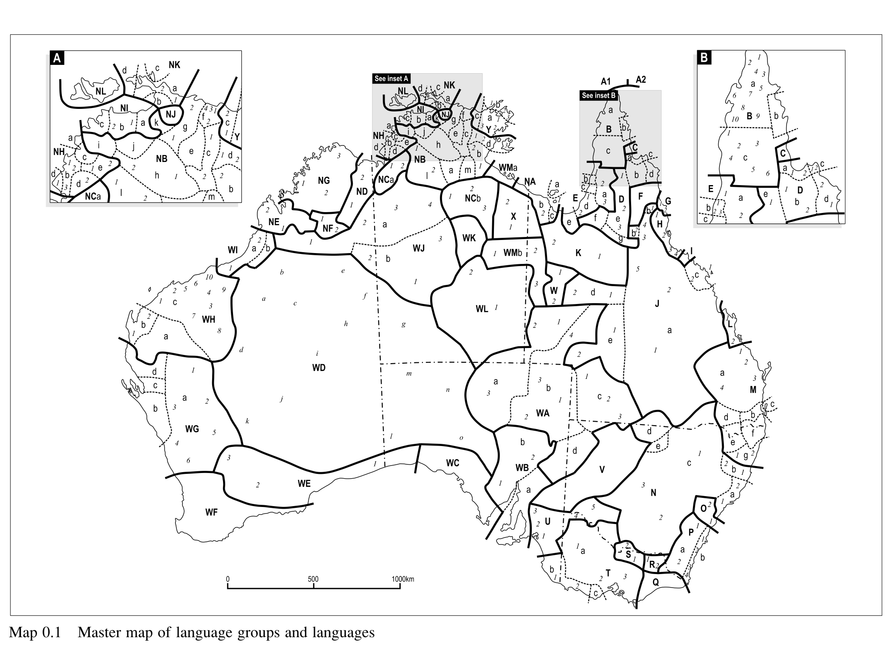
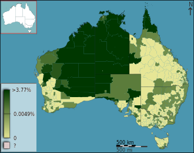
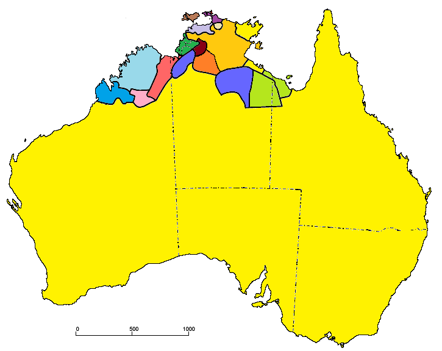
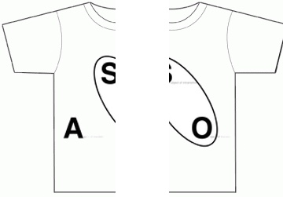

<lang>English</lang><br><ldata>IE:Germanic - All over</ldata> <iframe data-autoplay width="840" height="600" src="http://www.youtube.com/embed/XfR9iY5y94s"></iframe> Men At Work - Down Under --- (Unfortunately, the Dyribal Rap Scene doesn't appear too robust) --- ### Tone is important > One tonal slip-up led Mr Zuckerberg to claim that Facebook had just 11 mobile users instead of one billion. > While most agreed that his pronunciation was far from fluent, most were also impressed that he had attempted it at all. [Source Article](http://www.bbc.co.uk/news/technology-29741796) --- <img class="big" src="humorimg/meanwhile_in_australia.jpg"> --- # Languages of Australia ### LING 1020 - Will Styler --- ### Today's Agenda * Languages of Australia * Features of Australian Languages * Taboos and Taboo Avoidance --- # Australian Languages --- ### Australia's big <img class="big" src="lotwimg/australia_size.jpg"> --- ### ... and Linguistically diverse ---  --- ### Language use in Australia * 76.8% of Australians speak *only* English at home. * Australian *had* around 400 indigenous languages before Europeans showed up --- > The number of individual languages listed for Australia is 390. Of these, 213 are living and 177 are extinct. Of the living languages, 7 are institutional, 18 are developing, 12 are vigorous, **35 are in trouble, and 141 are dying**. ([Source](http://www.ethnologue.com/country/AU)) --- <img class="big" src="humorimg/surprisedkoala.jpg"> --- ### Let's talk about what we know about what's left * (Australian Indigenous languages are really poorly studied) --- ### Indigenous Languages aren't spoken everywhere in Australia  --- ### Major (remaining) language families in Australia * Pama-Nyungan * Everything else --- ### Pama-Nyungan in Yellow  --- ### Australian Languages are definitely a *language area* --- ### Features of Australian Indigenous Languages * Ergativity (often split) * Few vowels (usually /i, a, u/) * Few voicing contrasts * Lots of places of articulation * Taboos and "Mother in law" languages --- ### Split Ergativity * Been there, done that... ---  --- ### Few Vowels * Tiwi (Isolate) - i a o u * Warlpiri (P-N) - i i: a a: u u: * Walmajarri (P-N) - i i: a a: u u: * Wati (P-N) - i i: a a: u u: * Dyirbal (P-N) - i a u * Arrernte (P-N) - ə a * See? Told you so! --- ## Few Voicing Contrasts ## Lots of Place Contrasts --- <lang>Warlpiri</lang><br><ldata>Pama-Nyungan - Australia</ldata> <img class="big" src="lotwimg/warlpiri_consonants.png"> --- <lang>Arrernte</lang><br><ldata>Pama-Nyungan - Australia</ldata> <img class="big" src="lotwimg/arrernte_consonants.png"> --- <lang>Dyirbal</lang><br><ldata>Pama-Nyungan - Australia</ldata> <img class="big" src="lotwimg/dyirbal_consonants.png"> --- <section data-background="img/clickerbkgrnd.png"></section> ### What's the other language family we've worked with which also has dental/alveolar/retroflex/palatal stop contrasts? A) Nilo-Saharan B) Dravidian C) Tai-Kadai D) Indo-European:Slavic --- <section data-background="img/clickerbkgrnd.png"></section> ### What's the other language family we've worked with which also has dental/alveolar/retroflex/palatal stop contrasts? A) Nilo-Saharan <correct>B) Dravidian</correct> C) Tai-Kadai D) Indo-European:Slavic --- <lang>Dyirbal</lang><br><ldata>Pama-Nyungan - Australia</ldata> 1. animate objects, men 2. women, water, fire, violence 3. edible fruit and vegetables 4. miscellaneous (includes things not classifiable in the first three) * <danger>Dyirbal has five speakers left</danger> --- <lang>Warlpiri</lang><br><ldata>Pama-Nyungan - Australia</ldata> <iframe data-autoplay width="840" height="500" src="http://www.youtube.com/embed/asM39tfblMQ"></iframe> --- <lang>Arrernte</lang><br><ldata>Pama-Nyungan - Australia</ldata> <iframe data-autoplay width="840" height="500" src="http://www.youtube.com/embed/wg7G8pf1fVo"></iframe> --- Both Warlpiri and Arrernte are spoken by around 3,000 people. --- ## Taboos and "Mother-in-law languages" --- ### Taboo A prohibition on a behavior, action, or topic of discussion based on moral or religious grounds * *This is from the Fijian (Austronesian:Malayo-Polynesian) word *tabu* meaning *forbidden** --- ### Every culture has taboos * Some taboos of action * Things which *must* not be done * Some taboos of discussion * Things which *must* not be discussed * Some taboos of conversation * People you *cannot* speak with * These can and do change over time --- Think about things that can't be done, topics that can't be discussed, and people you can't speak with. * <danger>What are some taboos in American society *which have changed in the last 50 years*?</danger> --- ### Sometimes, we need to discuss tabooed issues! --- ## Taboo Avoidance --- ### Taboo Avoidance Linguistic mechanisms to avoid breaking a cultural taboo --- ### Indirect conversations Talking about something without really talking about it * *"So, are you and Suzy... you know... being safe?"* --- ### Euphemism A less direct or "harsh" word for a concept which we don't want to discuss. * These turn into "safe" terms for tabooed concepts * "Downsizing" vs. "Firing everybody" * "Neutralize" vs. "Murder" * "Vertically Challenged" vs. "Short" --- ### The Euphemism Treadmill * Euphemisms must be replaced regularly due to "pejoration" * Pejoration is when a word takes on the "badness" of the tabooed concept --- ### How did we refer to the mentally disabled? * "Imbecile" * "Idiot" * "Moron" * "Slow" * "Retarded" * This is now apparently "the R word" * "Intellectually/Mentally/Developmentally Disabled" * Give it around 10 years before we have some new one --- ### Other terms on the treadmill * lame / crippled → handicapped → disabled → physically challenged → differently abled → People with disabilities. * shell shock (World War I) → battle fatigue (World War II) → operational exhaustion (Korean War) → posttraumatic stress disorder --- <section data-background="img/clickerbkgrnd.png"></section> ### Which of the following is *not* a euphemism? A) "The facilities" for "Bathroom" B) "Collateral damage" for "accidentally killed civilians" C) "Dismiss" for "fire (an employee)" D) "slaughtered" for "murdered" E) "put to sleep" for "euthanize" --- ### These euphemisms can become institutionalized --- ### "Political Correctness" Lays out strongly tabooed topics, groups, and ideas, then dictates "safe" euphemisms and approaches to discussing them * The "safe" euphemisms change regularly, and proper use signals political sensitivity * "Colored" -> "Negro" -> "Black" -> "African American" -> "Black" * "Transgendered" -> "Transgender" -> "Trans" * "Gay" -> "Gay/Lesbian" -> "LGBT" -> "LGBTQ" -> "LGBTTQQIAAP" * (Lesbian, Gay, Bisexual, Transgender, Transsexual, Queer, Questioning, Intersex, Asexual, Ally, Panssexual) * Improper use or use of dated terms violates the taboo within this culture * ... and is a punishable offense --- (Whenever you think about judging other cultures for weird taboos, just think about this system in the US.) --- <danger>What are some other ways that we get around taboos of discussion in American society?</danger> --- ### Australian Indigenous Cultures have/had a rich system of taboos * Mother-in-law can't talk to son-in-law * Father-in law can't talk to Daughter-in-law * Of-age Brothers and sisters can't talk * The dead aren't referred to by name * The word is removed outright from the language * This lasts 1-3 years. --- ### This leads to some remarkable taboo avoidance --- ## Taboo Avoidance in Australian Languages --- ### Mother-in-law languages Specific "sub-languages" (grammars and vocabularies) for dealing with tabooed relatives --- This is sort of an extension of the honorific registers we've talked about before. --- <lang>Dyirbal</lang><br><ldata>Pama-Nyungan - Australia</ldata> * Two "forms" of the language * "Guwal": The general-use form of the language * "Dyalŋuy": A sub-form used only with tabooed relatives --- ### Dyalŋuy * Has around 1/4 of the vocabulary * Doesn't have many specialized terms * Uses different words for the same meanings * 'to ask' is baŋarrmba-l in Dyalŋuy * 'to ask' is ŋanba-l in Guwal * The lack of words makes speakers resort to fun tricks to express themselves * Causative/Intranstive Markers --- ### Dyirbal speakers have a smaller, incomplete sub-language to manage this taboo. * ( ...and we thought political correctness was onerous!) --- ### How about the death taboo? * When somebody dies, you can't use their name * <danger>How can you get around this taboo?</danger> * <danger>What if the person's name was part of the language? (e.g. "Will")</danger> --- ### Non-specific name mentions * Avoid mentioning the dead by using other names * Don't say "Mary", say "that old brown-haired woman from Denver" * Don't say "Michael Bay", just say "that guy who makes crappy movies" * Borrow a word to replace the tabooed word --- ### This taboo avoidance is one thing that makes Australian Languages remarkable. * ...and it's pretty awesome in the rest of the world, too. --- ### Wrapping up * Australia had a rich linguistic scene * Then Europeans showed up. * Australian Languages have a Language Area going on * Pama-Nyungan Languages are the predominant indigenous language family there * They've got awesome features. * Taboo avoidance is awesome. --- ## Next time: More awesome languages that Europeans damned near wiped out! <correct>Read Pereltsvaig 10.1</correct> --- <huge>Thank you!</huge> ---